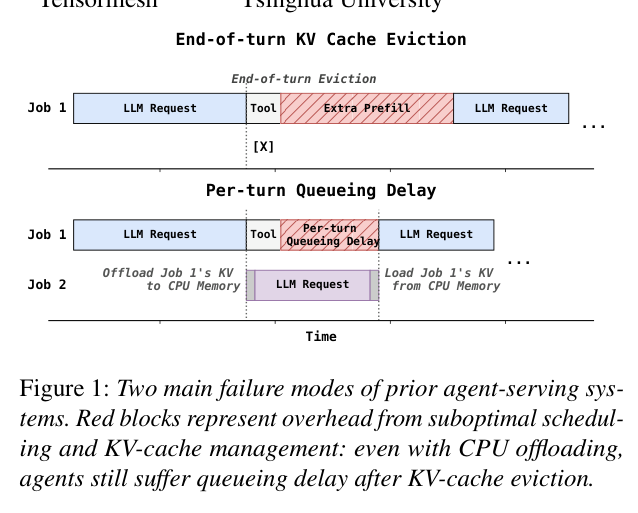
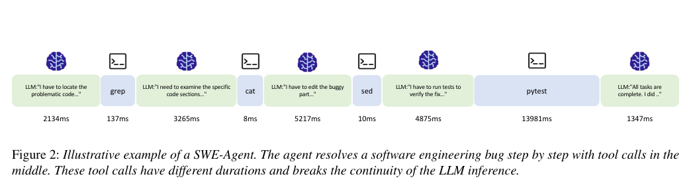
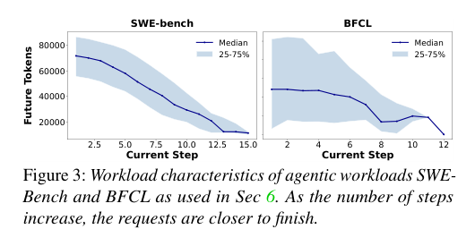
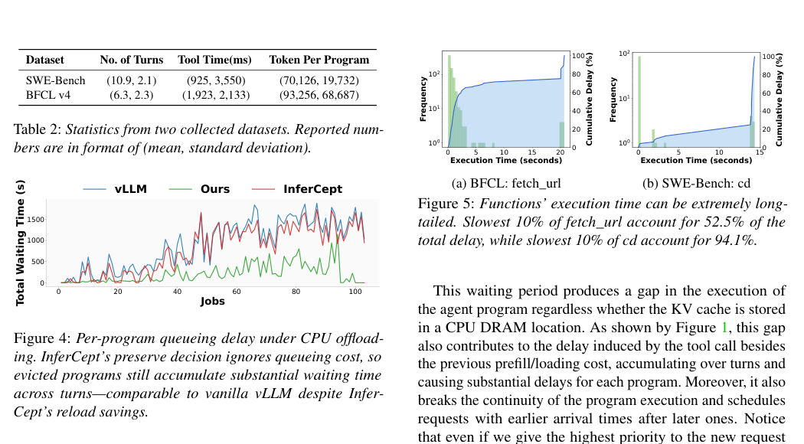
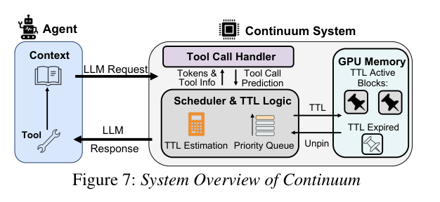
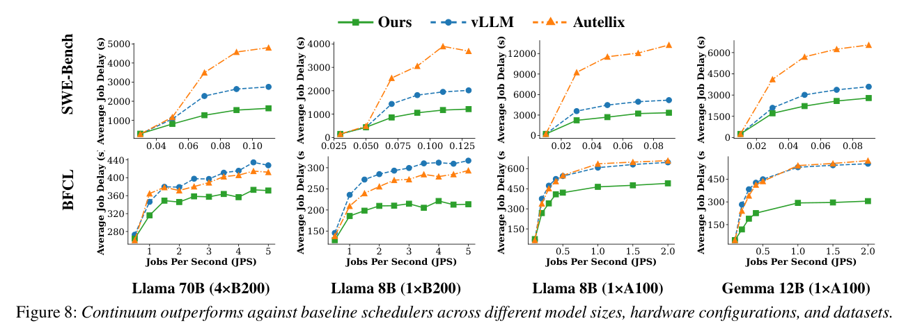
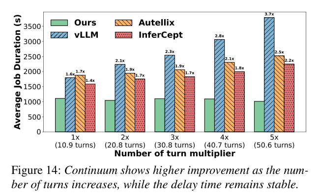
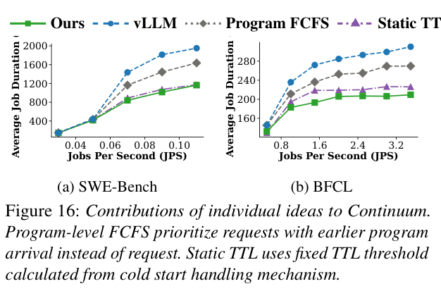
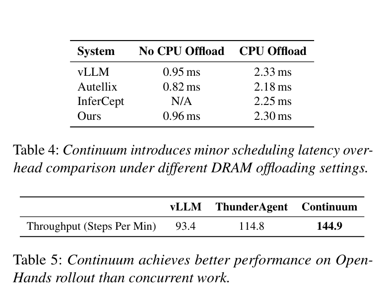

Continuum: Efficient and Robust Multi-Turn LLM Agent Scheduling with KV Cache Time-to-Live
作者：Hanchen Li、Runyuan He、Qiuyang Mang、Qizheng Zhang、Huanzhi Mao、Xiaokun Chen、Hangrui Zhou、Alvin Cheung、Joseph Gonzalez、Ion Stoica。
论文状态：arXiv 预印本；另有 ICLR 2026 Lifelong Agent Workshop 版本。
Motivation
Agent 不是一次 LLM 请求
普通聊天请求通常是一次完整的 Prefill → Decode。
ReAct Agent 范式：
LLM 第 1 轮 → Tool → LLM 第 2 轮 → Tool → …… → LLM 第 N 轮
每一轮几乎总会复用此前全部上下文。问题是：工具执行期间 LLM 暂停，serving engine 看不到这个程序何时回来，却必须立刻决定是否保留它的 KV Cache。
删掉、换出、保留都可能出问题。

- 轮末立即淘汰会重复 Prefill。 如果第 1 轮结束就释放 KV，第 2 轮返回时必须重新处理全部历史上下文。Agent 越往后上下文越长，重复计算越贵。
- 换出到 CPU 仍有排队延迟。 CPU offloading 可以避免从 Token 重新 Prefill，但请求返回时仍要把 KV 搬回 GPU，并重新进入 serving 队列。
- 永久保留浪费显存。 工具可能几毫秒返回，也可能运行数十秒。长期 pin 住所有暂停 Agent 的 KV，会挤压正在 Decode 的请求。
所以 CPU 中有 KV 备份不等于多轮 Agent 没有调度问题。Continuum 的目标是同时减少恢复成本和每轮重新入队成本。

Figure 2 ReAct Agent 范式的例子。一次修复任务依次调用 grep、cat、sed、pytest；工具耗时从 8 ms 到 13,981 ms 不等。LLM 请求之间不是预先可知的 DAG 节点，而是由上一轮模型输出动态决定的工具间隔。
1.4 现有方案的核心缺陷
| 方法 | 保留 KV 缓存 | 考虑每轮排队延迟 | 限制保留时长 | 核心问题 |
|---|---|---|---|---|
| vLLM | ✗ | ✗ | ✗ | 回合结束立即驱逐，不适配 Agent |
| Autellix | ✗ | ✗ | ✗ | 仅做任务级调度，不关注 KV 复用 |
| Pie | ✓ | ✗ | ✗ | 仅提供可编程接口，无内置策略 |
| InferCept | ✓ | ✗ | ✗ | 仅考虑重载成本，忽略排队延迟；无保留时长上限 |
其中 InferCept 是最接近的相关工作，但它只比较重载 KV 的成本 和 占用显存的机会成本，没有建模多轮排队延迟的累积效应；其静态保留策略也难以适应工具调用时长的高方差。

论文使用 GPT-5 生成并分析 100 条 mini-SWE-agent/SWE-Bench 轨迹和 100 条 BFCL V4 Web Search 轨迹。Figure 3 则给 program-level FCFS 提供经验依据：随着当前 step 增加，两类轨迹的未来 Token 中位数总体下降。较早进入并已经执行多轮的程序通常更接近结束。
因此按程序首次到达时间维持相对顺序，可作为不可知未来时的 SRTF (先完成距离完成轮数最少的任务) 近似。

Figure 4 进一步证明只考虑 CPU offload 不行。InferCept 即使省下一部分 reload，仍因忽略逐轮 queueing cost 而积累接近 vLLM 的 waiting bubble；Figure 5 则说明永久 preserve 同样危险，预测偏长会让慢工具长期占住 HBM。
Core Design
Continuum 调度闭环
1. Program 与工具时长预测
Continuum 为属于同一个 Agent 的多轮请求附加 program_id。当一轮 LLM 调用结束、工具开始运行时，系统记录工具类型；下一轮 LLM 请求到达时，工具处理器计算两次事件的时间差，并更新该工具的经验耗时集合。
它不训练复杂预测模型，而是直接使用经验累积分布：
P(τ, f) = Pr (Tf ≤ τ)
其中 f 是工具，τ 是候选 TTL。这个量表示：若 KV 保留 τ 时间，该工具能在过期前返回的概率。
冷启动时历史数据不足，系统分三级回退：
- 工具 f 的样本数超过阈值 K=100：使用该工具自己的分布；
- 工具样本不足、但全局样本足够：使用全部工具的全局分布；
- 系统刚启动、全局样本也不足：使用指数分布先验 Exp(1)。
这种方法预测的是分布而不是单个点估计。长尾工具即使均值相同，最优 TTL 也可能不同。
2. TTL 的收益与成本模型
保留请求 r 的 KV τ 时间，显存时间成本定义为：
$$ Cost(\tau,r)=\frac{MemUsage(r)}{M}\tau $$
MemUsage(r) 是该请求 KV 占用，M 是 GPU 可用于 KV 的总容量。其单位可以理解为“占用了多少比例显存 × 多长时间”。
若工具在 TTL 内返回，收益由两部分组成：
Benefit(r) = CacheMissCost(r) + OutOfOrderCost(r)
第一部分是避免 KV miss：
$$ CacheMissCost(r)=\frac{MemUsage(r)}{M}\left(Prefill(r)-Reload(r)\right) $$
Prefill(r) 表示从 Token 重算上下文的时间，Reload(r) 表示从 CPU 等层级恢复 KV 的时间。两者之差越大，留在 GPU 越有价值。
第二部分是避免程序顺序被打乱：
$$ OutOfOrderCost(r)=\frac{T}{M}MemUsage(r)\eta $$
T 是滑动平均排队延迟，η 是论文定义的 memoryfulness：
η = − Corr(k, N − k)
k 是程序已服务的请求数，N-k 是剩余请求数。若轮数近似固定，做得越多意味着剩得越少，二者负相关，η 接近 1；若过程近似无记忆的几何分布，已完成轮数不能预测剩余轮数，η 接近 0。意思大概是只有在程序历史确实能提示剩余工作时，Continuum 才给保持原程序顺序更高价值。
综合后，系统选择：
τ* = arg maxτ[P(τ,f)⋅Benefit(r)−Cost(τ,r)]
化简后：
τ* = arg maxτ[P(τ,f)(Tη+Prefill(r)−Reload(r))−τ]
系统只需枚举经验分布中出现过的工具时长以及 0，不需要在线求解连续优化问题。模型—硬件组合的 Prefill 与 GPU/CPU 传输曲线在离线 profiling 阶段获得：使用 1K、2K、4K 等上下文长度采样，再拟合二次函数，耗时低于 10 分钟。
结合前面的工具调用预测结合TTL做判断 KV 去留
3. Program-level FCFS
TTL 只决定 KV 是否留在显存，仍需要决定请求先后。Continuum 的优先级为：
- 已被抢占、需要恢复的请求；
- TTL 尚未过期、KV 仍 pinned 的程序；
- 其余程序按整个程序第一次到达系统的时间 FCFS。
4. KV Pin、过期与死锁处理
在 vLLM 中，一轮结束时 pin_request 保存 KV block，并记录过期时间；常规 block 回收会跳过仍在 TTL 内的请求。下一轮到达时若 KV 仍在，直接复用。
过期也不意味着无条件立即释放：如果程序已经在 waiting queue 中，说明下一轮已经回来，系统不会刚命中又淘汰。程序最终结束时则显式 unpin。
若 pinned KV 占满显存，以至于新 batch 无法执行，系统启动 deadlock recovery：从最近到达的程序开始逐个解除 pin，直到能够继续调度。这保证 TTL 是性能偏好，而不是破坏系统活性的硬约束。
实现约 1K 行 Python，主要增加 func_call_finish、update_tool_call_time、set_up_ttl 等路径，并修改 vLLM 的 KV 生命周期和优先级。

Figure 7 展示了运行时闭环。Agent 将 LLM request 送入系统；Tool Call Handler 从回复中识别工具类型，并在下一轮到达时获得真实工具耗时；Scheduler 用工具历史、Token 数和排队状态计算 TTL 与优先级；GPU Memory 将 block 标记为 TTL Active，过期后再 unpin。这里没有提前构造完整 DAG，预测对象只是工具间隔及程序历史。
Evaluation
实验如何检验这些设计
| 项目 | 设置 |
|---|---|
| 模型 | Llama-3.1-8B、Llama-3.1-70B、Gemma-3-12B；真实部署另测 GLM-4.5 FP8 |
| GPU | A100-SXM、H100、B200；真实 OpenHands 使用 8×H100 |
| 工作负载 | SWE-Bench、BFCL V4 Web Search、OpenHands；轨迹按 Poisson 到达回放 |
| Baseline | vLLM 0.10.2、LMCache 0.3.7、Autellix/PLAS、InferCept |
| CPU KV 空间 | A100 100 GB；H100/B200 200 GB |
| 分布式栈 | SGLang 0.5.5.post3、Dynamo 0.7.0.post1，1P1D |
| 主要指标 | Average response time、尾延迟、throughput、scheduler overhead |
论文用多条真实 Agent 轨迹按到达过程并发回放；真实部署还运行了 500 个 SWE-Bench Verified 任务。
结果

Figure 8 的横轴都是到达率 JPS，纵轴是 average job delay，因而曲线越低越好。上、下两排分别为 SWE-Bench 与 BFCL，列方向改变模型和 GPU。随着 JPS 增加，vLLM 与 Autellix 的延迟增长更快；绿色曲线更平缓。证明动态 TTL 在不同 KV 容量和模型大小下都能延缓排队拥塞。不过各子图纵轴范围不同，不能拿曲线高度跨图直接比较。
Llama-3.1-8B 轨迹回放中，相比原始 vLLM，平均响应时间最高约降低 2×。

Figure 14 固定一组 SWE-Bench 轨迹，并把轮数从平均 10.9 放大到 50.6。Continuum 的绿色柱基本保持在约 1,000 秒，而其他方案随轮数上涨；相对 vLLM 的优势由 1.6× 增至 3.7×。

Figure 16 依次比较 vLLM、只加入 Program FCFS、再加入 Static TTL，以及完整动态 TTL。Program FCFS 已降低延迟，说明保留程序顺序本身有效；Static TTL 继续改善，但完整方案在 SWE-Bench 和 BFCL 上最低。

Table 4：调度开销。 表中报告的是 scheduler overhead：无 CPU offload 时 vLLM 为 0.95 ms、Continuum 为 0.96 ms；开启 CPU offload 时分别为 2.33 ms 和 2.30 ms。说明 Continuum 没有引入显著的额外调度延迟。
Table 5：面向强化学习 rollout 的 micro-benchmark。 论文使用 OpenHands Agent、GLM-4.5-fp8、Multi-SWE-Bench 和单节点 8×H100，报告 vLLM、ThunderAgent、Continuum 分别为 93.4、114.8、144.9 steps/min。